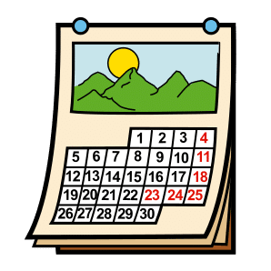
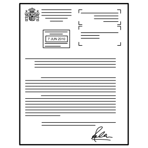
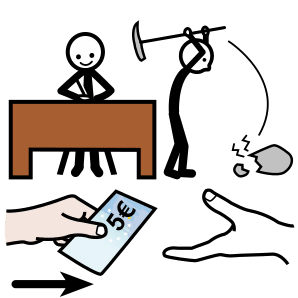

Thématique C · CAP
Fiche de révision C1 — Les différents contrats de travail
Révise en t'amusant, écoute, puis imprime ta fiche
Fais défiler la page : les notions apparaissent une à une. Touche les cartes pour les retourner, touche 🔊 Écouter pour entendre une carte, une question ou une correction, puis réponds aux questions « Je vérifie mes acquis ».
1. Le contrat de travail
Un accord entre deux parties. Touche chaque carte.
Le contrat de travail est l'accord par lequel le salarié met son activité à disposition d'un employeur, contre une rémunération. Sources : Code du travail, Service-Public.
2. Le CDI — contrat à durée indéterminée
Un emploi stableIl est signé sans limitation de durée.

Une seule dateIl précise seulement la date d'embauche. Il n'y a pas de date de fin.La ruptureIl peut être rompu par l'employeur ou par l'employé.
À retenirSeul le CDI à plein temps peut être oral : tous les autres contrats sont écrits.
3. Le CDD — contrat à durée déterminée

Toujours écritLe CDD est obligatoirement écrit.Une date de finIl est signé pour une tâche précise et temporaire et comporte une date de fin, ou au moins un terme.
L'indemnité de fin de contratÀ la fin, le salarié perçoit une indemnité de 6 à 10 % de la rémunération totale brute perçue.
Les congés payésIl perçoit aussi une indemnité compensatrice de congés payés (10 %) s'il ne les a pas pris.
4. CDI, CDD, intérim : ne pas confondre
Touche une étiquette, puis le bon contrat.
Le CDD et l'intérim donnent droit aux mêmes indemnités. Le CDI, lui, n'en donne pas : il ne se termine pas à une date prévue.
5. L'intérim : deux contrats, trois acteurs
Touche chaque acteur pour voir son rôle.
Deux contrats, jamais un seul : le contrat de mission (salarié ↔ ETT) et le contrat de mise à disposition (ETT ↔ entreprise utilisatrice).
6. L'apprentissage et la professionnalisation
Deux contrats en alternance. Touche pour comparer.
7. Les mentions d'un contrat de travail
Qui ?Le nom et l'adresse de l'entreprise et du salarié.
Quel emploi ?L'objet du contrat et la désignation de l'emploi.
Quand ?La date d'embauche et la date éventuelle de fin de contrat.
La période d'essaiSa durée. Pendant cette période, chacun peut rompre le contrat sans indemnité ni préavis.

Combien ?Le montant de la rémunération et la date de versement du salaire.Où et dans quel cadre ?Le lieu et les horaires de travail, et la convention collective applicable.
8. Les droits et les obligations
L'obligation de l'un est le droit de l'autre. Range chaque étiquette.
Le salarié a le droit de percevoir un salaire correspondant au travail effectué ; l'employeur a le droit de sanctionner un salarié qui a commis une faute.
9. L'essentiel à retenir
Le contrat de travail lie un employeur et un salarié : travail contre salaire.
Le CDI est stable, sans limitation de durée ; il indique seulement la date d'embauche.
Le CDD est écrit, pour une tâche temporaire, avec indemnités de fin de contrat.
En intérim, deux contrats sont signés (mission et mise à disposition) via une ETT.
Apprentissage et professionnalisation reposent sur l'alternance et visent une qualification.
Chaque partie a des droits et des obligations : le salarié travaille, l'employeur paie.
Je vérifie mes acquis : 0 / 0